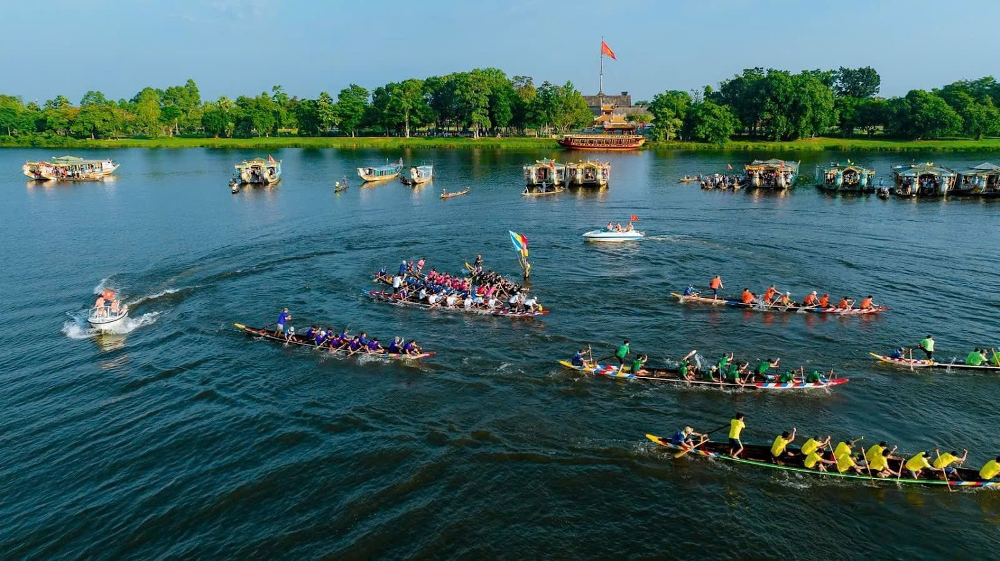

🌊Hội đua ghe Huế
📍 Địa điểm: Sông Hương, thành phố Huế
🕒 Thời gian: Thường tổ chức vào dịp Quốc khánh 2/9 (có thể thay đổi theo năm)
🎫 Giá vé: Miễn phí
📖 Giới thiệu
Hội đua ghe Huế là lễ hội truyền thống đặc sắc của người dân vùng sông nước Cố đô. Lễ hội diễn ra sôi động trên dòng Sông Hương, thu hút đông đảo người dân và du khách tham gia cổ vũ.
Các đội đua đại diện cho nhiều địa phương sẽ tranh tài trên những chiếc ghe dài, thể hiện sức mạnh, sự dẻo dai và tinh thần đoàn kết. Không chỉ mang tính thể thao, lễ hội còn mang ý nghĩa cầu mong mưa thuận gió hòa, cuộc sống ấm no.
⚠️ Lưu ý
👒 Nên đến sớm để chọn vị trí xem đẹp
☀️ Mang theo nón, nước uống vì thời tiết khá nắng
🚯 Giữ gìn vệ sinh chung
🚦 Tuân thủ hướng dẫn an toàn khu vực đông người
🎯 Hoạt động nổi bật
● Đua ghe truyền thống giữa các đội
● Biểu diễn văn nghệ dân gian
● Không khí cổ vũ náo nhiệt hai bên bờ sông
📸 Gợi ý tham quan
● Chụp ảnh toàn cảnh đường đua trên sông
● Ghi lại khoảnh khắc các đội về đích
● Kết hợp tham quan Cầu Trường Tiền gần đó